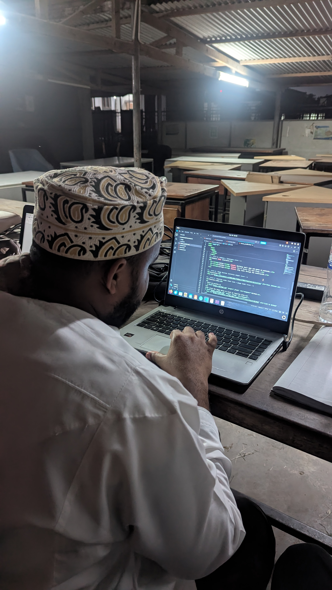

About Me

Am Business analyst who loves to solve analytical problem of business.
Am enjoying studing analytical software and develop analytical system
Curently am studing Bacholar of Business Information Techlogy and
I love learning new thing and meet people who share my interest
Skills
- Programming
- Data analyst
- Web Design
- Problem Solving
- Programming
- HTML
- CSS
- Python
- JavaScript
Education
| Level | School | Year |
|---|---|---|
| Primary | Stadium Primary School | 2008-2014 |
| Secondary | Khairat Secondary School | 2015-2018 |
| University | University Dar es salaam | 2025-Present |
Hobbies & Interests
- Coding — Building small apps and games on weekends.
- Reading — Sci-fi novels and tech blogs.
- Cycling — Long rides through the countryside.
Activities
Favorite Links
Visit my profile on GitHub.
Or click the image below to visit my favorite site: